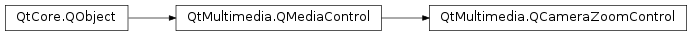

QCameraZoomControl¶
Detailed Description¶
The
PySide2.QtMultimedia.QCameraZoomControlclass supplies control for optical and digital camera zoom.The interface name of
PySide2.QtMultimedia.QCameraZoomControlisorg.qt-project.qt.camerazoomcontrol/5.0as defined inQCameraZoomControl_iid().
-
class
PySide2.QtMultimedia.QCameraZoomControl([parent=nullptr])¶ Parameters: parent – PySide2.QtCore.QObjectConstructs a camera zoom control object with
parent.
-
PySide2.QtMultimedia.QCameraZoomControl.currentDigitalZoom()¶ Return type: PySide2.QtCore.qrealReturn the current digital zoom value.
-
PySide2.QtMultimedia.QCameraZoomControl.currentDigitalZoomChanged(digitalZoom)¶ Parameters: digitalZoom – PySide2.QtCore.qreal
-
PySide2.QtMultimedia.QCameraZoomControl.currentOpticalZoom()¶ Return type: PySide2.QtCore.qrealReturn the current optical zoom value.
-
PySide2.QtMultimedia.QCameraZoomControl.currentOpticalZoomChanged(opticalZoom)¶ Parameters: opticalZoom – PySide2.QtCore.qreal
-
PySide2.QtMultimedia.QCameraZoomControl.maximumDigitalZoom()¶ Return type: PySide2.QtCore.qrealReturns the maximum digital zoom value, or 1.0 if digital zoom is not supported.
-
PySide2.QtMultimedia.QCameraZoomControl.maximumDigitalZoomChanged(arg__1)¶ Parameters: arg__1 – PySide2.QtCore.qreal
-
PySide2.QtMultimedia.QCameraZoomControl.maximumOpticalZoom()¶ Return type: PySide2.QtCore.qrealReturns the maximum optical zoom value, or 1.0 if optical zoom is not supported.
-
PySide2.QtMultimedia.QCameraZoomControl.maximumOpticalZoomChanged(arg__1)¶ Parameters: arg__1 – PySide2.QtCore.qreal
-
PySide2.QtMultimedia.QCameraZoomControl.requestedDigitalZoom()¶ Return type: PySide2.QtCore.qrealReturn the requested digital zoom value.
-
PySide2.QtMultimedia.QCameraZoomControl.requestedDigitalZoomChanged(digitalZoom)¶ Parameters: digitalZoom – PySide2.QtCore.qreal
-
PySide2.QtMultimedia.QCameraZoomControl.requestedOpticalZoom()¶ Return type: PySide2.QtCore.qrealReturn the requested optical zoom value.
-
PySide2.QtMultimedia.QCameraZoomControl.requestedOpticalZoomChanged(opticalZoom)¶ Parameters: opticalZoom – PySide2.QtCore.qreal
-
PySide2.QtMultimedia.QCameraZoomControl.zoomTo(optical, digital)¶ Parameters: - optical –
PySide2.QtCore.qreal - digital –
PySide2.QtCore.qreal
Sets
opticalanddigitalzoom values.Zooming can be asynchronous with value changes reported with
PySide2.QtMultimedia.QCameraZoomControl.currentDigitalZoomChanged()andPySide2.QtMultimedia.QCameraZoomControl.currentOpticalZoomChanged()signals.The backend should expect and correctly handle frequent calls during zoom animations or slider movements.
- optical –
© 2018 The Qt Company Ltd. Documentation contributions included herein are the copyrights of their respective owners. The documentation provided herein is licensed under the terms of the GNU Free Documentation License version 1.3 as published by the Free Software Foundation. Qt and respective logos are trademarks of The Qt Company Ltd. in Finland and/or other countries worldwide. All other trademarks are property of their respective owners.